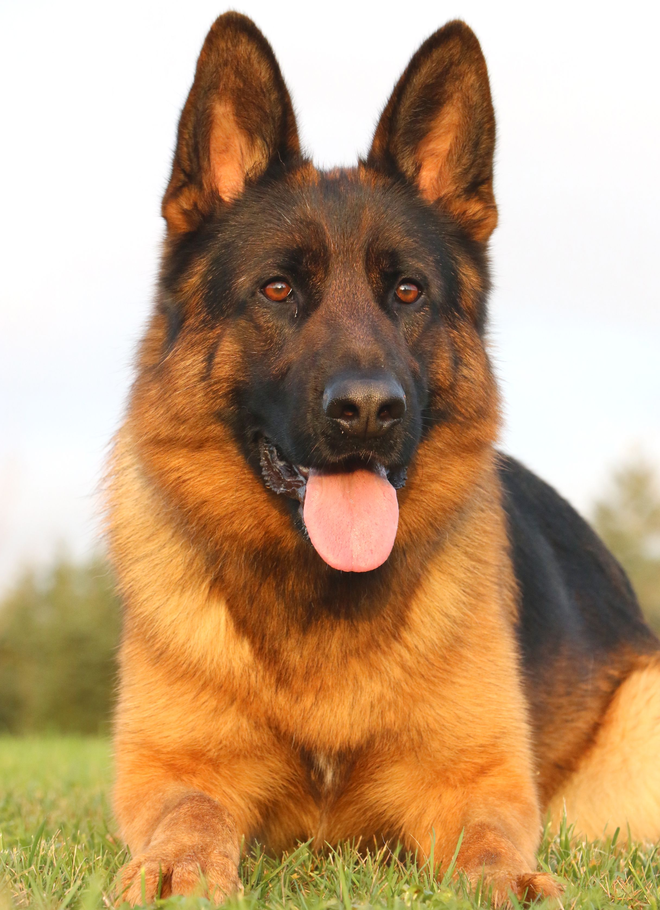

На главную
Практическое задание №1
Немецкая овчарка: описание породы

Собаки этой породы - прирожденные работники, очень сообразительные, с высокой способностью к обучению и освоению новых навыков.
Основная информация:
- Рост (высота в холке): кобели 33-40 см, суки 23-33 см
- Вес: кобели 45-50 кг, суки 40-45 кг
- Продолжительность жизни: 10-13 лет
Положительные качества:
- Высокий интеллект
- Высокий уровень управляемости
- Работаспособность
- Высокие показатели служебных качеств
- Неспособность манипулировать человеком
- Доброта
- Умение приспособится к любым условиям
Ссылка на VK